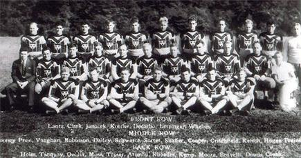

History
Founding
Established in July 1933, they were originally called the Pirates just like the baseball team from the same town in hopes that the fans from baseball would come to watch the football team.
(First Pirates team)
Their first season was back when all players played on both sides of the ball. Their record that first season was 3-6-2. They had a losing record every season until 1936 when they ended at .500 at 6-6, but after that they went straight back to losing.
A New Name
1940 the founder Art Rooney ran a poll in the newspaper to find a new name and it was eventually settled as the Steelers which also happened to be the name of a very popular high school team at that time.
Team Mergers
During WWII many players signed up or were drafted, so the Pittsburgh Steelers combined with the Philadelphia Eagles (1943)
(Steagles Logo)
and became the iconic Steagles. They did decent going 5-4-1 on the season. But they were awful when they merged with the Chicago Cardinals (1944).
(Card-Pitt Logo)
They would have been better off not playing any of their scheduled games going 0-10 on that season and losing by an average of 3 touchdowns in every game. This is considered one of the single worst seasons ever by any organization.
The Logo
In 1962 Art Rooney made an agreement with the steel works to add their logo to the helmet. Some adjustments were made and the logo that some graphic designers came up with was put on the helmet. There was a problem with the information as to where the logo should be placed on the helmet. The equipment manager was told by the son of Art Rooney, Dan Rooney that he was to just simply place the emblem on the helmet. So, he put it on the right side and then did nothing with the left side. The logo was only on one side of the helmet and since the organization did not have the money to redo all the helmets, they had to roll with it. The unexpected consequence of this though was that the team would have its best season ever. They went from 6-8 in 1961 to 9-5 in 1962 after the implementation of the new brand. That did not last though because immediately over the next couple of years they went back to having a losing record.
The Start of a Dynasty
After many years of breaking even and losing the team seemed like they could catch a break, when, with the first overall pick in 1970, they drafted Terry Bradshaw. Just like the Steelers organization Bradshaw started out his career in college abysmally, but just like he would end up doing, with some help, he turned it all around. Terry’s first couple of years were not great. In fact, some went as far as to say he was a bust and that the Steelers could have taken someone else. In 1972 is when everything changed for the team. They drafted this player named Franco Harris along with bringing in some more weapons for Bradshaw to use. On top of that, their defense was starting to look top teir. They had one of if not their best season going 11-3. Over the next couple of years, they had winning season after winning season. In 1974 is when the narrative of the Steelers really started. They won the Super Bowl and that was just one of many to come.
(First Super Bowl against the Vikings)
They won the Super Bowl again the following year in 1975. Making the playoffs was easy the following four years, but the championship in 76 and 77 was not obtainable. In 78 and 79 though, the magic returned and they went back-to-back once again. Nothing happened for a while after that 4th title, in fact, it took 16 years for them to make it back to that Super Bowl. They, unfortunately, did not win that one.
The Repeat?
In 2004 the Steelers were not first in the draft, but they were able to snag a young QB by the name of Ben Roethlisberger. Ben would not see much of the field that year. The following year of 2005 was his full season debut, and just like how Bradshaw had help, the young QB was able to shine with a great set of offensive weapons and an insane defense that was not the same but close to that of the seventies. They would make it to the Super Bowl where they would beat the Seattle Seahawks. Over the next year the team would have a terrible season. A team that just won it all fell so far in one off-season. 2007 was the year when a new and young head coach was brought in. He had helped a different franchise win a title just half a decade earlier. Mike Tomlin is his name, and his first season was better than the one before he got there. Yet the team found themselves being worn out from too much conditioning and training in the first round of the playoffs. Tomlin had to reflect on his first year and adjusted his plan for the following year of 2008. This team rallied behind its defense and played scarily rough. Many of the games they played came down to the defense making a play to turn the outcome of the game or finish it. They got back to the tough type of football Pittsburg was known for and made it to the Super Bowl. This was a big deal for not only the team, but some of the players as well. Fortunatly, the team was able to secure their 6th Lombardi trophy. This made the Pittsburgh Steelers the first team ever to win 6.
(Sixth Super Bowl against Cardinals)
Tomlin in just the following year of 2009 led mostly the same team back to the Super Bowl and it looked like they would be the first to 7. But during the final drive, Rashard Mendenhall fumbled the ball losing the game for the Steelers. Since that defeat the Steelers have made the playoffs a handful of times and never gotten close to the Super Bowl.
Awards
Super Bowls
The steelers are one of the most winning teams in NFL history ranked currently at number 4. With all of those wins most would assume that they have at least wone one Super Bowl. In fcat they have won six Super Bowls.

(Six Lombardi Trophies)
In total the Pittsburgh Steelers have made it to a total of eight Super Bowls and lost only two of those.
Other Achivments
As a team they were the first to six wins. More acholades have been won by some of the players by themselves. This team is mostly known for their dominant defenses. They have had seven of their player win the defensive player of the year award.
(Here is a picture of the most recent to win it, TJ Watt)
He won it in the 2021-2022 year after he tied the single season sack record amongst some of his other stats for the season.
Roster
HOF
The Hall of Fame is the biggest honor someone in the sport can have. Anyone from the coaches to the broadcasters of the soprt can be put in this hall with all of the other living legends. The Steelers currently have 29 people in there. They are divided up between two of their three ever head coaches, the founder and own himself, one director and 25 players. (Picture of Coach Cowher, Troy Polamolu, Mean Joe Greene and Alan Faneca)